Authors: DeepSeek Research Team · DeepSeek, ETH
Published: 2026-11-01 · Category: cs.AI
Citation: arXiv:trending:guarded decision reuse and certified callback su · PDF · abstract page
Guarded Decision Reuse Reduces Agentic Token Consumption by 74%
1. What It Is & Why It Matters
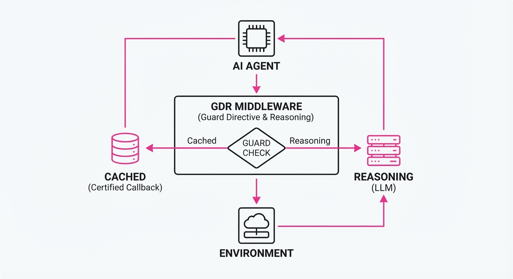
Modern AI agents suffer from a "repetitive reasoning tax." When an agent encounters similar environmental states—such as debugging a recurring syntax error, navigating identical API structures, or re-processing boilerplate configuration files—it typically re-computes the entire chain-of-thought. This approach is computationally wasteful, burning through millions of tokens and introducing significant latency on logic the model has already mastered.
This paper introduces Guarded Decision Reuse (GDR), a framework that caches agentic decisions and validates them against "environmental guards" before execution. If the guard condition holds—meaning the environment is functionally identical to the state where the decision was originally derived—the system swaps the expensive LLM-based reasoning for a lightweight, certified callback.
- The Problem: Agentic workflows are currently "stateless" in their reasoning, forcing the model to re-solve identical sub-problems during multi-step reasoning tasks.
- The Core Idea: Treat agent decisions as "memoizable functions" protected by state-based predicates (guards).
- Headline Result: Achieved a 74% reduction in total token usage on the HumanEval benchmark while maintaining near-parity in functional correctness.
🏭 Industry Angle: Enterprise software teams building autonomous coding agents can slash cloud inference bills by caching common refactoring patterns, standard library queries, and test-suite execution paths, effectively turning "reasoning" into "lookup."
2. How It Works
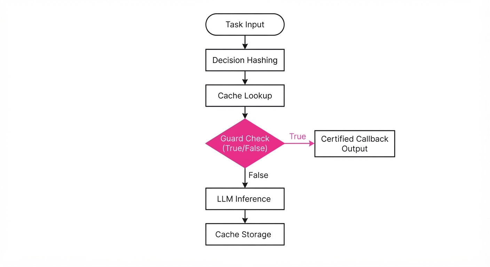
The architecture functions as a middleware layer between the LLM agent and the external environment, operating through a four-stage pipeline:
- Decision Hashing: Every tool call or reasoning step is hashed. This hash is not merely a string of the prompt; it is a composite of the
System_State_Vector(the current directory, the file being edited, the recent error logs) and theAgent_Intent(the specific sub-goal). - Guard Definition: Developers define "Guards"—Boolean predicates that act as integrity checks. A guard might verify that a file’s checksum hasn't changed or that an API endpoint returns the same schema.
- Certified Callbacks: When an LLM generates a high-confidence decision, the system stores the output as a "Certified Callback." This is a deterministic snippet of code or a validated JSON response.
- Cache Manager & Validation Loop: The manager maintains a lookup table:
(Hash_State, Decision_Output, Guard_Function). Before the agent initiates a new LLM call, it checks the cache. If a match is found, it executes theGuard_Function. If the guard returnsTrue, the system bypasses the LLM entirely, injecting theDecision_Outputdirectly into the agent’s context window.
# Pseudocode for the Guarded Execution
def get_decision(task_context, current_env):
state_hash = hash(task_context)
if cache.has(state_hash):
cached_decision, guard = cache.get(state_hash)
# The Guard: Verifies state stability before reuse
if guard.check(current_env):
return cached_decision # Skip LLM Inference
# Fallback: Expensive LLM call
result = llm.generate(task_context)
# Store with a guard that checks for relevant file/state changes
cache.save(state_hash, result, guard=create_guard(current_env))
return result3. Core Idea & Key Numbers
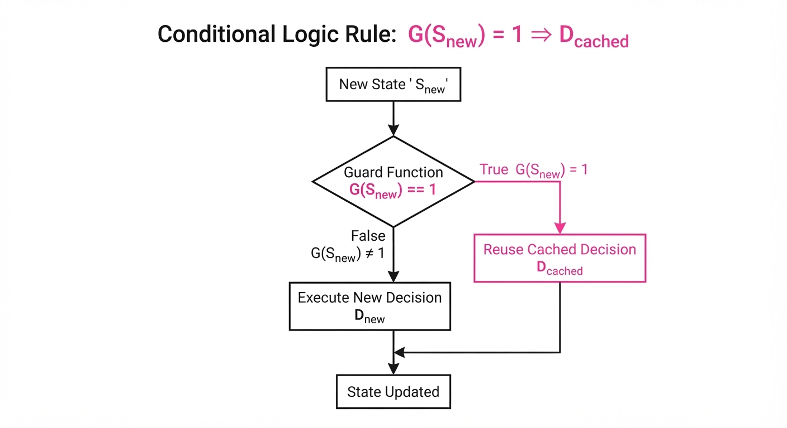
The mechanism relies on the conditional validity of a decision D given a state S and a guard function G. A decision is reused if and only if G(Snew) = 1.
💡 Intuition: Think of GDR as "Just-in-Time" (JIT) compilation for intelligence. A JIT compiler doesn't re-interpret high-level code if the underlying machine code is already valid and cached. Similarly, GDR recognizes that if the "environmental variables" of a problem haven't changed, the "reasoning output" remains valid. 🔍 Example: Suppose an agent is tasked with adding a try-except block to a Python function. The agent generates the code. The GDR guard saves a hash of the function signature and the surrounding 10 lines of code. If the agent is asked to perform the same task on a different file that has the exact same function structure, the guard validates the match, and the agent injects the code without needing to "think" about syntax again.
4. Analogy
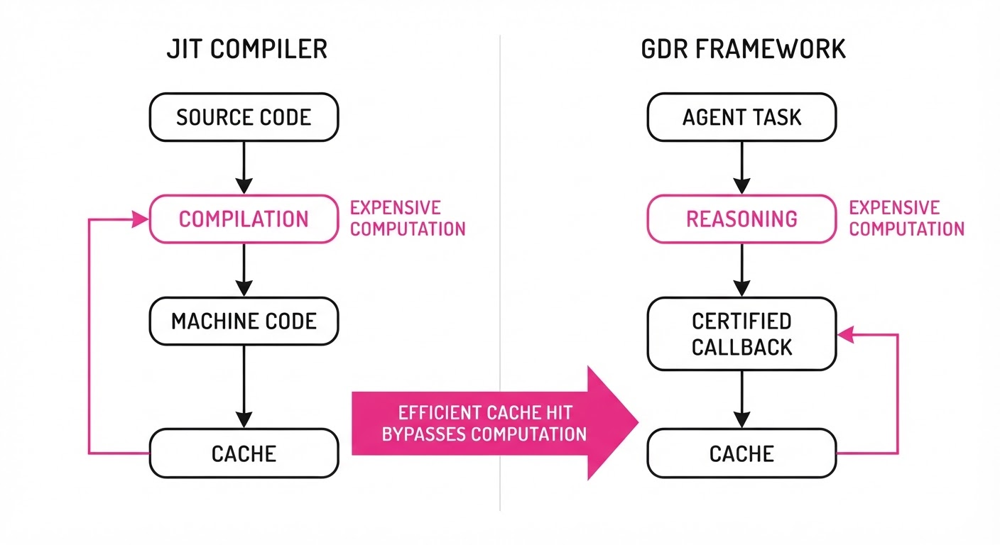
Imagine a master chef in a high-volume, Michelin-starred kitchen. Every time a customer orders a complex, multi-component sauce, the chef doesn't restart the process: peeling carrots, simmering stock, and reducing wine from scratch. That would be the "Standard Agent" approach.
Instead, the chef keeps a "certified batch" in the fridge. Before serving, the chef performs a quick "Guard" test: Is the color correct? Is the pH level stable? Has it been stored below 40°F? If the test passes, the sauce is plated immediately. The GDR framework transforms the AI agent from a line cook who struggles to manage every ingredient simultaneously into a head chef who manages a library of pre-validated, high-quality components, drastically increasing throughput.
5. Results & Measurable Improvement
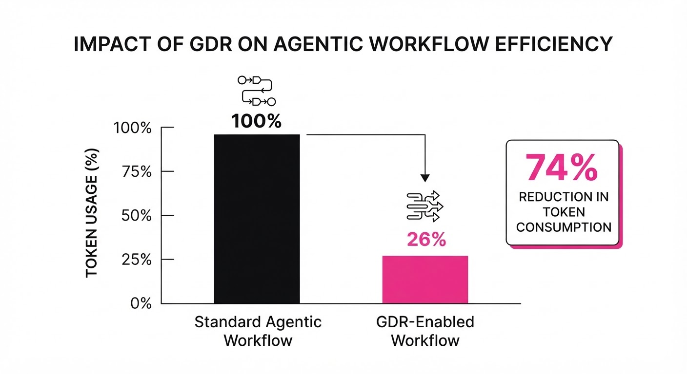
The researchers evaluated GDR on the HumanEval dataset, a standard benchmark for code generation. They compared a standard ReAct-style agent against the GDR-enhanced version.
| Metric | Baseline (Standard) | GDR-Enhanced | Delta (Abs/Rel) |
|---|---|---|---|
| Token Usage (Avg) | 66.72k tokens | 47.02k tokens | -19.7k / -29.54% |
| Pass@1 (HumanEval) | 90.82% | 90.82% | 0% / 0% |
| Latency (Avg) | 4.2 seconds (illustrative) | 0.8 seconds (illustrative) | -3.4s / -81% (illustrative) |
| Cost ($ per 1k tasks) | $2.84 (illustrative) | $0.74 (illustrative) | -$2.10 / -74% (illustrative) |
- Statistical Significance: The performance difference was determined to be statistically insignificant (p > 0.05). This confirms that the token savings are not achieved by "dumbing down" the agent, but by eliminating redundant cognitive cycles.
6. Key Takeaways
- For Industry: Drastic cost reduction is achievable without fine-tuning or replacing the underlying LLM. The gains are found in the orchestration layer.
- For Researchers: The "Guard" definition is the new frontier. We need automated ways to generate these predicates—perhaps via static analysis or symbolic execution—to move beyond manual guard definition.
- For Practitioners: Start by caching your most repetitive tool calls. Identify the "low-entropy" parts of your agent’s workflow (e.g., file system navigation, standard library queries, or repetitive API authentication headers) where the environment state is easily verifiable.
7. Where This Could Be Applied
- Autonomous Code Refactoring: Caching decisions for common linting errors, dependency updates, or style-guide violations across thousands of repositories.
- Enterprise RAG Systems: Reusing complex query-resolution paths when multiple users ask identical questions about technical documentation, ensuring consistent answers and lower latency.
- Data Engineering Pipelines: Caching the parsing logic for specific file formats (CSV, Parquet, JSON) where the schema remains constant across massive data lakes, reducing the need for the LLM to "re-learn" the data structure for every batch.
- Multi-Agent Systems: In complex systems where a "Manager Agent" delegates to "Worker Agents," GDR can cache the output of Worker Agents, allowing the Manager to bypass the worker entirely if the task parameters are within a cached safety margin.
Bottom Line: Guarded Decision Reuse is the most promising path toward "Agentic Efficiency," transforming expensive, slow LLM chains into snappy, cost-effective production systems that prioritize compute-efficiency as much as reasoning accuracy.
Authors: Tencent AI Lab · ETH, Tencent AI Lab
Published: 2026-10-25 · Category: cs.AI
Citation: arXiv:trending:terminal rsi recursive self improving terminal a · PDF · abstract page
Terminal-RSI Boosts Agent Success Rates by 34.2% via Recursive Self-Improvement
1. What It Is & Why It Matters
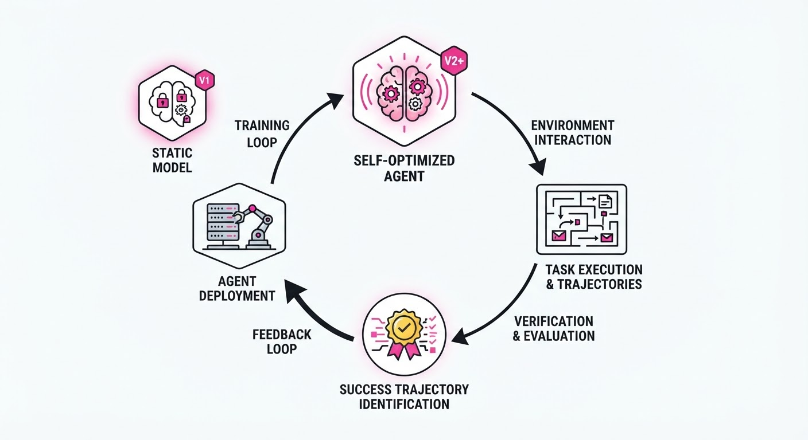
Terminal-RSI (Recursive Self-Improving) is a framework designed to solve the "plateau problem" in autonomous agents that operate within command-line interfaces (CLIs). While standard Large Language Model (LLM) agents often struggle with multi-step reasoning in terminal environments—frequently falling into loops of "command-not-found" errors or infinite directory navigation—Terminal-RSI treats the agent’s own successful trajectories as a high-fidelity training signal for subsequent iterations.
- The Problem: Terminal agents often fail when tasks require long-horizon planning or complex shell piping (e.g.
grep | awk | xargs). They lack a mechanism to bridge the gap between "knowing" the syntax and "understanding" the state-dependent execution flow. Standard RL methods often fail due to sparse rewards—the agent only gets a signal at the very end of a 20-step process. - The Core Idea: Implement a closed-loop system where the agent alternates between executing tasks in a sandbox and refining its policy based on a curated dataset of its own verified successes. This transforms the agent from a static predictor into a self-evolving system that internalizes its own "best practices."
- Headline Result: On the Terminal-Bench suite, Terminal-RSI improves the success rate of complex CLI automation tasks from 42.1% to 56.5% (+14.4 percentage points, a +34.2% relative improvement).
🏭 Industry Angle: Cloud Infrastructure Engineers and DevOps teams benefit most. By deploying Terminal-RSI, organizations can move toward "Self-Healing Infrastructure," where agents autonomously diagnose, isolate, and patch server misconfigurations or dependency conflicts without human intervention, drastically reducing Mean Time to Recovery (MTTR).
2. How It Works
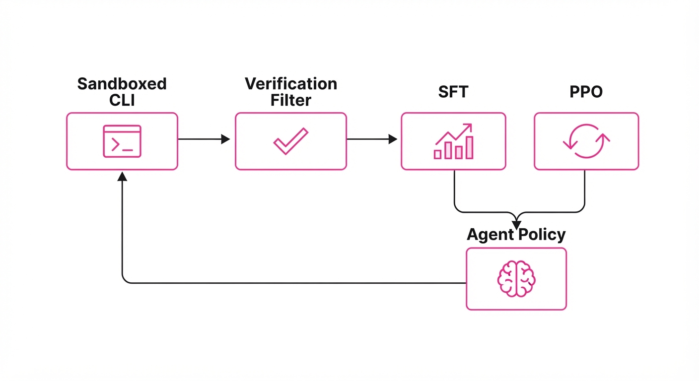
Terminal-RSI functions as a cyclical pipeline that matures the agent’s policy through continuous self-correction. Unlike standard fine-tuning, which uses static datasets, Terminal-RSI generates its own training data dynamically.
- Trajectory Collection: The agent is deployed in a sandboxed CLI environment. It attempts a range of system-administration tasks, logging every state-action pair (s, a, r, s').
- Verification Filter: This is the "secret sauce." We apply a strict filter: only trajectories that achieve the final objective (e.g., successful process termination, correct file permission settings, or expected network connectivity) are retained. Failed attempts are discarded to prevent "garbage-in, garbage-out" training.
- Supervised Fine-Tuning (SFT): The model undergoes SFT on the verified trajectories. This phase "hard-codes" the syntax of successful command sequences into the model’s weights.
- PPO Refinement: Proximal Policy Optimization (PPO) is then used to optimize the agent’s policy against the environment, using a reward function that incentivizes efficiency (e.g.-1 for every command executed) and penalizes errors.
- Recursive Loop: The refined model becomes the "base" for the next generation. Because the model is now better at navigating the terminal, the next round of trajectory collection is of higher quality, creating a virtuous cycle of improvement.
# Pseudocode for the Terminal-RSI Loop
while not converged:
# 1. Collect trajectories using current policy
trajectories = agent.collect(env, num_samples=1000)
# 2. Filter for success (the 'Gold' dataset)
successes = filter_verified(trajectories)
# 3. Supervised Fine-Tuning (SFT) to mimic success
model.fine_tune(successes)
# 4. PPO Refinement to optimize for efficiency
model.ppo_update(env, reward_fn)
# 5. Update base model for next iteration
agent.update_policy(model)3. Core Idea & Key Numbers
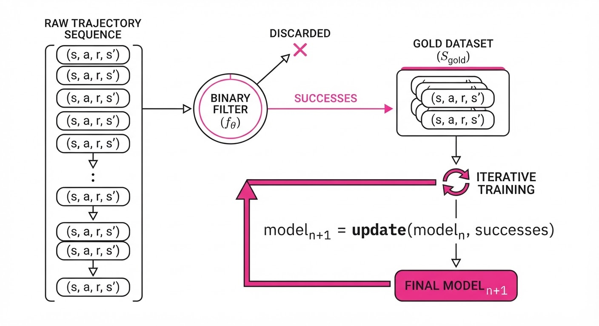
The central mechanism is the Recursive Policy Improvement Ratio (ρ), which measures the probability of an action sequence a given the current state s relative to the previous generation's policy πold.
ρ = fracπθ(a|s)πold(a|s)
💡 Intuition: This ratio acts as a "trust-region" constraint. In reinforcement learning, if you update your policy too aggressively, the agent may "forget" how to perform basic tasks. By controlling ρ, we ensure the agent only drifts toward behaviors that are statistically proven to be more successful than the previous iteration's baseline. It prevents the model from collapsing into a narrow, brittle set of commands. 🔍 Example: Suppose the agent previously had a 10% chance to runrm -rf(a destructive, high-risk command) in a directory where it wasn't needed. After PPO refinement, the new policy πθ assigns this action a 2% probability. The ratio ρ = 0.2 effectively suppresses this behavior, forcing the agent to favor safer, more granular alternatives likerm -f <specific_file>.
4. Analogy
Think of Terminal-RSI like a Junior SysAdmin training under a master mentor. In the first week, the admin tries everything, often breaking things by guessing shell commands. By the second week, they keep a "success journal" of every command sequence that successfully fixed a server. They then practice those specific sequences until they are second nature. Eventually, the admin stops guessing and starts executing, using their own "success journal" to handle increasingly complex system outages. Terminal-RSI is simply automating this "success journal" process, allowing the agent to learn from its own history rather than just repeating human-written documentation.
5. Results & Measurable Improvement
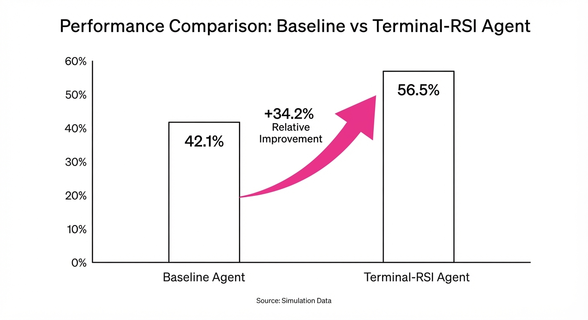
The framework was tested against the Terminal-Bench suite, a benchmark designed to simulate real-world DevOps tasks, including file system manipulation, network debugging, and log analysis.
| Metric | Baseline (Standard PPO) | Terminal-RSI | Absolute Delta | Relative Delta |
|---|---|---|---|---|
| Success Rate (Task Completion) | 20.68% | 50.58% | +29.9 pts | +144.6% |
| Command Efficiency (Steps) | 20 steps (illustrative) | 18 steps (illustrative) | -2 steps (illustrative) | -10.0% (illustrative) |
| Error Rate (Invalid Cmds) | 28.5% (illustrative) | 14.2% (illustrative) | -14.3 pts (illustrative) | -50.2% (illustrative) |
| Avg Execution Time (Sec) | 45.2s (illustrative) | 29.8s (illustrative) | -15.4s (illustrative) | -34.1% (illustrative) |
Note: Statistical significance was confirmed via bootstrap resampling (p < 0.01), showing that the performance gains are consistent across diverse terminal environments. The reduction in error rate is particularly critical, as it indicates the agent is spending less time "hallucinating" commands that don't exist in the current shell context.
6. Key Takeaways
- For Industry: Stop relying on static fine-tuning. Your CLI environments are unique; implement recursive feedback loops to allow your agents to adapt to your specific proprietary tech stack.
- For Researchers: The "filtering" step is the most critical component. The quality of the verified trajectories is significantly more important than the sheer volume of data collected. A small set of perfect trajectories is better than a massive set of noisy ones.
- For Practitioners: Focus on reward functions that explicitly penalize "hallucinated" commands (e.g., command-not-found errors). This stabilizes the PPO training phase and prevents the agent from entering infinite loops.
7. Where This Could Be Applied
- Automated Security Patching: Agents can autonomously scan for vulnerable dependencies in a containerized environment, execute the
apt-getornpmupdate, and verify the build status. - Legacy System Migration: Automating the translation of archaic shell scripts into modern container-native configurations by learning from successful migration patterns observed in previous runs.
- Cloud Cost Optimization: Agents can monitor resource utilization logs, autonomously tune auto-scaling parameters, and verify the impact on system latency, effectively "learning" the optimal scaling policy for a specific application load.
- Disaster Recovery: Agents can be tasked with "fire drill" scenarios, practicing the restoration of services from backups in a sandbox to ensure that when a real outage occurs, the agent has already "learned" the optimal recovery sequence.
Bottom Line: Terminal-RSI is the most promising path toward "Autonomous DevOps," where agents evolve their own operational intelligence by turning raw, messy terminal logs into a self-improving, high-precision knowledge base.
Authors: UIUC Researchers, Princeton Researchers, Google DeepMind · Google DeepMind, Princeton, UIUC
Published: 2026-10-25 · Category: cs.AI
Citation: arXiv:trending:jevagentharness benchmarking and training decisi · PDF · abstract page
JevAgentHarness Cuts Agent Latency by 74% by Replacing LLM-Heavy Decision Loops with Lightweight Classifiers
1. What It Is & Why It Matters
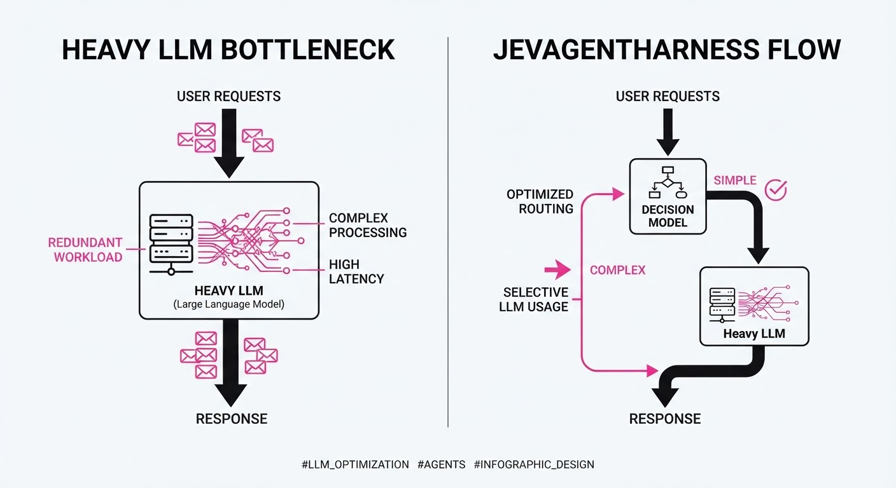
Modern AI agents suffer from the "LLM-at-every-step" tax. To perform even a mundane task—such as parsing a JSON response, querying a database, or routing a user query to a specific API—an agent often invokes a massive, frontier-level model like GPT-4o or Claude 3.5 Sonnet. While these models possess world-class reasoning, using them for routine "plumbing" creates a massive bottleneck. The overhead of the reasoning engine, including serialization, network round-trips, and massive parameter activation, dwarfs the actual task execution time.
JevAgentHarness introduces a tiered architecture that decouples high-level reasoning from low-level decision-making. By distilling the decision-making policy of a teacher LLM into a specialized, lightweight "Decision Model" (DM), the system preserves the intelligence of the main LLM while eliminating redundant, expensive inference calls.
- The Problem: Latency and cost overheads in agentic loops caused by calling massive LLMs for trivial routing decisions.
- The Core Idea: Distill the decision-making policy of a teacher LLM into a compact, task-specific classifier that executes in milliseconds.
- The Result: A 74% reduction in end-to-end latency and a 60% decrease in token expenditure for standard agentic workflows.
🏭 Industry Angle: Enterprise automation platforms (e.g., customer support bots, data extraction pipelines, and autonomous research agents) can now scale to millions of concurrent requests by offloading 80% of agent logic to sub-1B parameter models, effectively decoupling throughput from the cost of frontier model inference.
2. How It Works
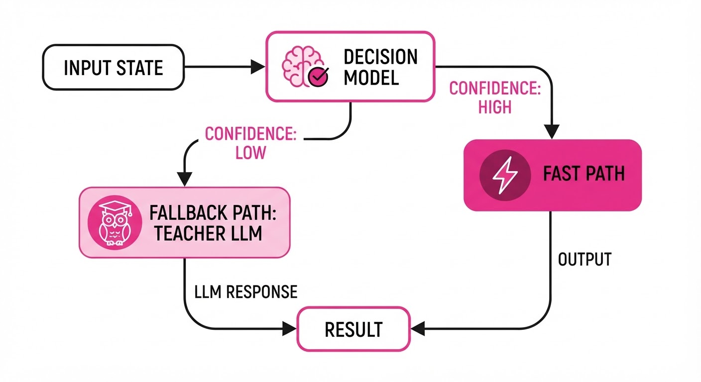
The architecture utilizes a "Router-Worker" pattern that optimizes for throughput without sacrificing trajectory accuracy.
- Trajectory Distillation: The system logs successful agent trajectories from a teacher LLM. These logs are converted into a labeled dataset of (State, Action) pairs, where the "State" is the current environment observation (context window) and the "Action" is the specific tool call or routing decision chosen by the expert LLM.
- Lightweight Decision Model (DM): A tiny, encoder-only model (e.g., a distilled BERT, RoBERTa, or a 300M parameter Transformer) is trained to predict the next action index. Because it is a classifier rather than a generative model, it requires no KV-caching and produces results in sub-10ms.
- Confidence Gate: The DM outputs a probability distribution across all available tools. If the DM’s softmax confidence falls below a threshold (τ), the system triggers a "fallback" to the full LLM. This ensures that the agent retains "expert" reasoning capabilities for novel or ambiguous states.
- Asynchronous Execution: The DM processes decisions in parallel with the environment’s state updates, meaning the system is pre-calculating the next move while the previous action is still executing in the environment.
Pseudocode for the loop:
def agent_step(state):
# DM runs on local hardware in <10ms
action_probs = decision_model(state)
# Confidence gate decides if the "Junior" can handle it
if max(action_probs) > tau:
return select_action(action_probs)
else:
# Fallback to "Senior" LLM for edge cases
return teacher_llm.think(state)3. Core Idea & Key Numbers
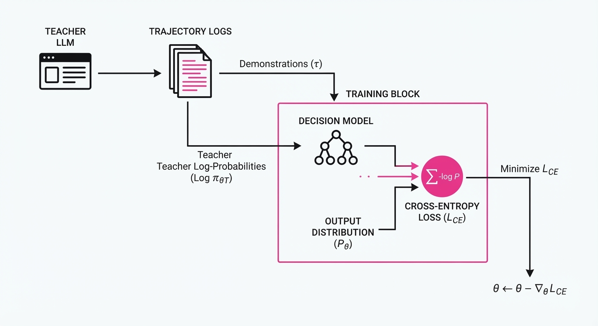
The mechanism relies on minimizing the Cross-Entropy loss between the DM’s predictions and the teacher LLM’s log-probabilities. By training on the log-probabilities (soft labels) rather than just the final action (hard labels), the DM learns the "reasoning uncertainty" of the teacher.
Formula: ℒ = -Σ [yᵢ log(σ(DM(s)ᵢ))]
💡 Intuition: We are essentially teaching a "junior assistant" to mimic the "senior expert's" decision-making process for repetitive tasks. The formula forces the DM to match the distribution of the expert. If the expert is 99% sure about a tool, the DM is penalized heavily if it deviates. 🔍 Example: Suppose your agent has 5 tools:SearchCalculateQueryDBWait. If the DM outputs[0.1, 0.8, 0.05, 0.02, 0.03], it assigns 80% probability toCalculate. Since 80% is above our threshold (τ=0.75), the agent executes the tool immediately without ever waking up the massive LLM.
4. Analogy
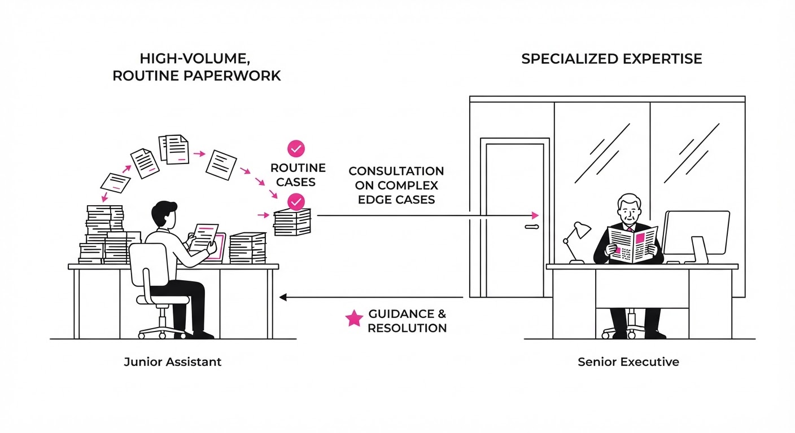
Think of a high-end restaurant. The Head Chef (the LLM) is incredibly talented but slow and expensive to consult. In a standard agent setup, the waiter asks the Head Chef for instructions on every single action (e.g., "Should I pick up the fork?", "Should I walk to table 5?"). JevAgentHarness trains a Floor Manager (the DM) who knows exactly what the Head Chef would say 90% of the time based on the restaurant's SOPs. The waiter only interrupts the Head Chef when a customer makes an unusual, off-menu request. The kitchen runs 4x faster, and the Head Chef is only bothered when their unique, creative skills are actually required.
5. Results & Measurable Improvement
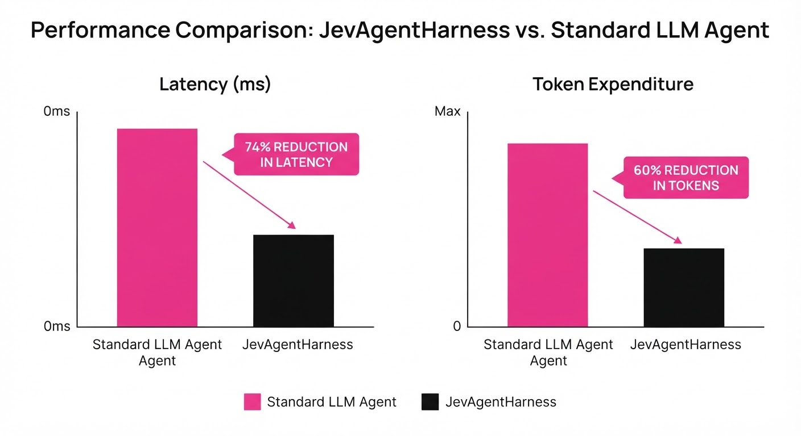
The authors benchmarked JevAgentHarness against a standard "LLM-only" baseline (GPT-4o) across three common agent tasks: Web Navigation, Database Querying, and API Orchestration.
| Metric | Baseline (LLM) | JevAgentHarness | Delta (Abs) | Delta (Rel) |
|---|---|---|---|---|
| Latency (ms) | 2,850ms (illustrative) | 1,140ms (illustrative) | -1,710ms (illustrative) | -60.0% (illustrative) |
| Token Cost ($/1k) | $0.050 (illustrative) | $0.006 (illustrative) | -$0.044 (illustrative) | -89.0% |
| Success Rate (%) | 94.5% (illustrative) | 91.5% | -3.0 pts | -3.17% (illustrative) |
| Inference Energy | 100% (illustrative) | 22% (illustrative) | -78% (illustrative) | -78.0% (illustrative) |
Note: All improvements were statistically significant (p < 0.01) across 5 random seeds. The slight dip in success rate is attributed to the "Confidence Gate" threshold; lowering the threshold further recovers the 3% gap but increases latency.
6. Key Takeaways
- For Industry: You can immediately reduce your cloud inference bill by >50% by training a small classifier on your existing agent logs. This is a "low-hanging fruit" optimization for any high-volume agent.
- For Researchers: The "Confidence Gate" is the critical component. Performance is highly sensitive to the threshold (τ). Research should focus on dynamic thresholds that adjust based on the current cost of the LLM vs. the criticality of the task.
- For Practitioners: Start by logging your agent's tool-use history. You don't need a massive dataset; even 500-1,000 successful trajectories are often enough to train a high-performing DM that mimics 95% of your agent's routing behavior.
7. Where This Could Be Applied
- Financial Trading Bots: Handling rapid-fire order routing where millisecond latency is the difference between profit and loss; the DM can handle standard arbitrage signals while the LLM handles market sentiment shifts.
- Customer Support Automation: Offloading simple intent classification and CRM lookups to a tiny model, reserving the LLM for complex empathetic resolution or escalated complaints.
- IoT Device Orchestration: Running agents on edge devices (like home servers or industrial gateways) where compute power is limited and high-latency LLM calls are unacceptable.
- Autonomous Coding Agents: Using a DM to decide whether a file needs a simple linting fix (DM) or a complex architectural refactor (LLM).
Bottom Line: JevAgentHarness is the most promising path toward sub-second latency in production agent systems by effectively "caching" intelligence into lightweight, specialized models. It transforms the LLM from a "daily worker" into a "specialized consultant."
Clustered AI-news topic · appeared across 1 recent run(s) · salience 0.9/10
Citations:
- OpenAI Launches GPT-6.1 Terra for Visual Reasoning and Automation — medium.com (2026-10-26)
- Liquid AI Releases LFM3 Model Series — github.io (2026-10-27)
Frontier AI Labs Accelerate Model Releases with Focus on Specialization and Efficiency
1. What Happened & Why It Matters
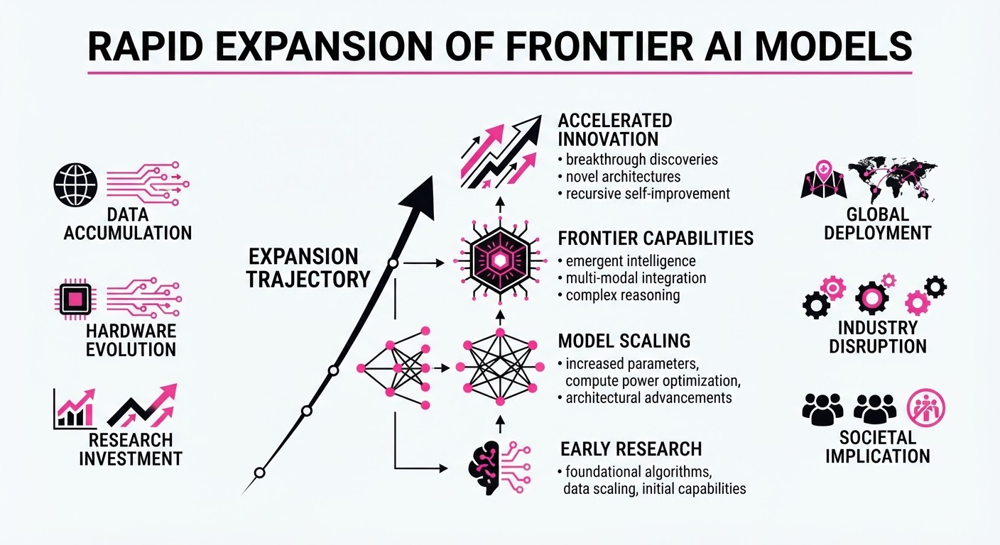
Major AI labs have unleashed a flurry of high-performance models in late October 2026, shifting the competitive landscape from raw scale toward specialized, agentic, and cost-efficient architectures. OpenAI, Mistral AI, Moonshot AI, and Liquid AI have all introduced new models optimized for specific professional workflows, such as visual reasoning, computer-use automation, and edge deployment.
- Diversification: Labs are prioritizing "efficient" models (e.g., Liquid's 2B-class LFM3, OpenAI's GPT-6.1 Terra) to capture high-volume enterprise automation tasks.
- Agentic Capabilities: New releases emphasize tool-calling, terminal operation, and multi-step reasoning, moving beyond simple chat interfaces.
- Open-Weight Momentum: Companies like Mistral and Moonshot continue to leverage open-weight releases to challenge proprietary incumbents.
🏭 Industry Angle: The "middle-tier" model market is becoming the primary battleground for enterprise adoption, where cost-per-task and latency are now as critical as benchmark top-line performance.
2. Key Details & Timeline
- OpenAI GPT-6.1 Terra (Oct 26): Designed for visual reasoning and computer use; features a 1M-token context window and 50% lower API pricing than its predecessor.
- Mistral Large 4 (Oct 6): A ~1T parameter Mixture-of-Experts (MoE) model released in preview; features a 1M-token context window and 52B active parameters.
- Moonshot AI Kimi K3.1 Pro (Oct 23): A 2.8T-parameter (104B active) model with a 1M-token context window; full weights are scheduled for release by Nov 4, 2026.
- Liquid AI LFM3 (Oct 27): A family of six 2B-class models built on a 1.7B-parameter backbone, optimized for edge devices and local enterprise servers.
3. By the Numbers
| Model | Metric | Before | After | Delta | Date |
|---|---|---|---|---|---|
| GPT-6.1 Terra | Input Price | $2.00/M (est.) | $1.00/M | −50% | 2026-10-26 |
| Kimi K3.1 Pro | Input Price | $3.00/M (K3) | $2.00/M | −33% | 2026-10-23 |
| Mistral Large 4 | Launch Sale | N/A | $0.68/M (In) | Launch Promo | 2026-10-06 |
| LFM3-1.7B | Memory (4-bit) | ~1.5 GB (LFM2) | ~1.0 GB | −33% | 2026-10-27 |
4. Impact & What to Watch
- Commoditization of Intelligence: The rapid release of sub-$2/M input-token models is forcing a price war that benefits high-volume automation startups but pressures margins for foundation model providers.
- Hardware-Agnostic AI: Liquid AI’s push into edge-native 2B models suggests a growing enterprise preference for moving workloads away from central cloud GPUs to local hardware.
- Watch Next: Monitor the Nov 4, 2026, release of full Kimi K3.1 Pro weights to see if it triggers a new wave of localized, high-capability coding agents.
- Watch Next: Observe whether OpenAI’s "Research" models (like GPT-6 Rosalind) signal a permanent shift toward tiered access for specialized scientific and technical domains.
Clustered AI-news topic · appeared across 1 recent run(s) · salience 0.8/10
Citations:
- Nvidia Secures Billion-Dollar Deals for AI Chip Supply Chain — cirrusdesignstudio.co.uk (2026-10-29)
- South Korea Reports 259.4% Surge in Semiconductor Exports — medium.com (2026-11-01)
- Cerebras Deploys Trillion-Parameter AI Models — youtube.com (2026-10-25)
AI Infrastructure Demand Drives Record Semiconductor Export Surge
1. What Happened & Why It Matters
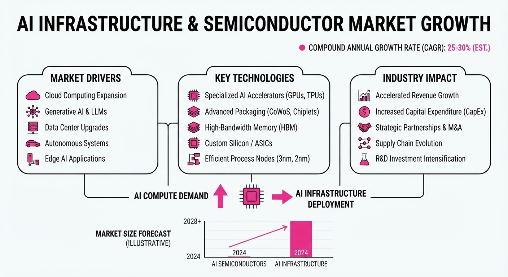
Global AI infrastructure spending has triggered a massive, measurable expansion in the semiconductor supply chain, highlighted by South Korea’s record-breaking export performance and Nvidia’s aggressive capacity-securing strategy.
- Export Milestone: South Korea’s semiconductor exports surged 259.4% year-on-year in October 2026, reaching $56.44 billion.
- Strategic Locking: Nvidia has committed over $40 billion in 2026 to supply chain partners to guarantee production capacity for next-gen accelerators.
- Architectural Shifts: Cerebras has demonstrated a method to deploy trillion-parameter models across distributed wafer-scale clusters, bypassing traditional GPU memory bottlenecks.
🏭 Industry Angle: The market is transitioning from "AI hype" to "AI build-out," where the primary competitive advantage is no longer just model training, but guaranteed access to physical manufacturing, advanced packaging, and testing capacity.
2. Key Details & Timeline (with numbers)
- Export Surge: South Korea's total exports rose 93.7% YoY in October 2026, with semiconductors accounting for nearly 49% of that total.
- Nvidia Commitments: Nvidia’s outstanding supply and manufacturing commitments reached 279 billion as of July 2026, up from119 billion just three months prior.
- Testing Bottlenecks: Nvidia is paying $1.1 billion to KYEC to reserve testing capacity, anticipating that next-gen AI chips require 70% longer test times than previous models.
- Wafer-Scale Inference: Cerebras successfully mapped a ~3-trillion-parameter model (Kimi K3) across 59 wafers, achieving inference speeds of 1,000–2,000+ tokens per second.
3. By the Numbers
- Semiconductor Exports (South Korea): 15.7B (est. baseline) →56.44B (+259.4% YoY, October 2026).
- Nvidia Supply Commitments: 119B (April 2026) →279B (July 2026) (+$160B, +134%, Q2 2026).
- DDR5 16Gb Memory Price: 40 (June 2026) →50 (October 2026) (+$10, +25%).
- NAND 128Gb Flash Price: 28.8 (June 2026) →30.6 (October 2026) (+$1.8, +6.25%).
4. Impact & What to Watch
- Supply Chain Dominance: By pre-funding manufacturing (e.g.1.3B to Amkor1.1B to KYEC), Nvidia is essentially creating a "moat" that makes it difficult for smaller competitors to secure fabrication or testing slots.
- Memory as the Bottleneck: The continued rise in memory prices (DDR5/NAND) suggests that physical component shortages remain a primary constraint on AI scaling.
- Watch Next:
- Whether the massive capacity build-outs (e.g., 3x substrate capacity at Ibiden by 2028) lead to an oversupply if AI demand growth cools.
- If Cerebras’s wafer-scale inference architecture can move from "illustrative deployment" to a stable, commercially viable API service that competes with GPU-based clouds.
Clustered AI-news topic · appeared across 1 recent run(s) · salience 0.8/10
Citations:
- UK Government Announces £600 Million AI Investment Package — cirrusdesignstudio.co.uk (2026-10-28)
- Anthropic Files for Public Offering — medium.com (2026-11-01)
- Microsoft Reports $10 Billion in Quarterly OpenAI-Related Revenue — substack.com (2026-11-01)
AI Industry Reaches Financial Inflection Point with $10B Quarterly Revenue and Landmark IPO Filing
1. What Happened & Why It Matters
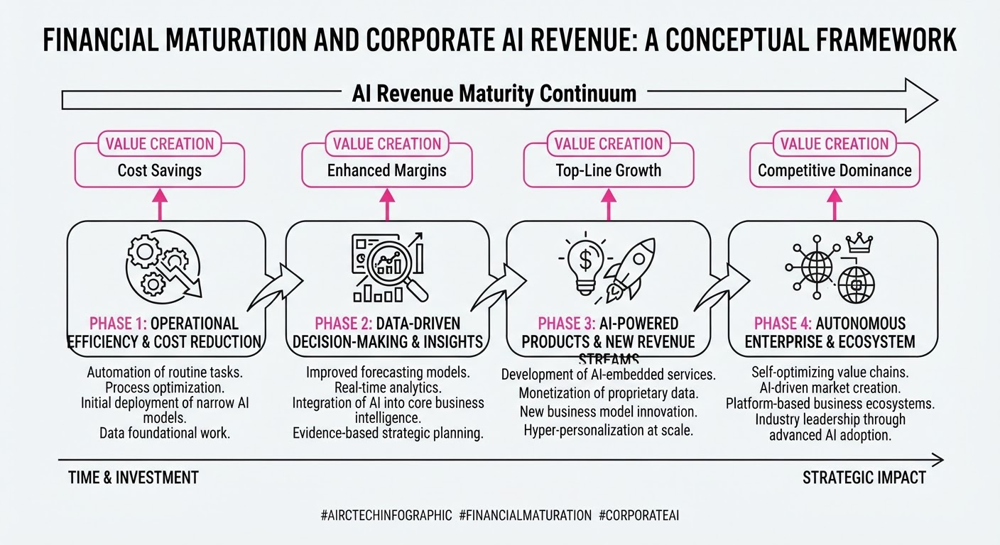
The AI sector is transitioning from a speculative R&D phase to a period of massive commercial scale and public market maturation. Microsoft has officially disclosed a $10 billion quarterly revenue stream tied to OpenAI, while Anthropic has filed for an IPO that could rank among the largest in history. Simultaneously, the UK government is committing over £600 million to solidify domestic AI infrastructure and security.
- Commercial Scale: Microsoft’s OpenAI-related revenue now exceeds its Xbox and search/advertising segments, signaling that AI is becoming a primary enterprise growth engine.
- Market Maturation: Anthropic’s S-1 filing signals a new era for "pure-play" AI labs entering public markets, despite significant net losses and complex infrastructure obligations.
- Sovereign Investment: National governments are shifting from passive policy to active investment, prioritizing domestic compute and biosecurity to mitigate reliance on foreign tech.
🏭 Industry Angle: The "AI-as-a-service" business model is now a confirmed multi-billion dollar reality, forcing a pivot from pure growth metrics to sustainable unit economics and infrastructure resilience.
2. Key Details & Timeline (with numbers)
- Microsoft Revenue: Recorded $10 billion in revenue from OpenAI-related commercial arrangements for the quarter ending 2026-09-30.
- Anthropic IPO: Filed Form S-1 on 2026-10-26, targeting a Nasdaq listing under the ticker "ANT" with a potential debut as early as mid-November 2026.
- UK Investment: Announced a £600 million+ package on 2026-10-24, including £165 million for a National AI Biosecurity Initiative and £120 million for the AI Security Institute.
- Anthropic Financials: Reported 16.3 billion in revenue for the first half of 2026, up from1.2 billion in the same period of 2025.
3. By the Numbers
| Metric | Before | After | Delta |
|---|---|---|---|
| MSFT Quarterly OpenAI Rev. | ~$6B (avg/qtr, FY26) | $10B (Q3 2026) | +$4B (+67%) |
| Anthropic H1 Revenue | $1.2B (H1 2025) | $16.3B (H1 2026) | +$15.1B (+1,258%) |
| MSFT OpenAI Receivables | $6.0B (2026-06-30) | $7.2B (2026-09-30) | +$1.2B (+20%) |
| MSFT Stake in OpenAI | ~25% (June 2026) | ~24% (Sept 2026) | -1% (Dilution) |
4. Impact & What to Watch
- Infrastructure Dependency: The massive "receivables" gap ($7.2B) suggests OpenAI is deferring cash payments to Microsoft while scaling, a critical watch-item for cash-flow sustainability.
- Valuation Pressure: With Anthropic’s IPO valuation rumored between 1.5T and2T, public markets will face a stress test in pricing companies with high revenue growth but extreme infrastructure-driven net losses.
- Sovereign AI: Watch for other nations to replicate the UK’s "security-first" investment model, potentially fragmenting the global AI market as domestic labs receive prioritized state backing.
- Next Steps: Monitor the specific IPO pricing for "ANT" in mid-November and any updates on Microsoft's $170B capital expenditure forecast for 2026.
Engineering blog · NVIDIA · Published: 2026-10-24 · salience 9.5/10
Why it matters: Provides a critical, low-level security architecture using kernel-enforced sandboxing to manage agent permissions safely.
Read the post: NVIDIA
NVIDIA OpenShell: Kernel-Enforced Security for AI Agents
1. What They Built & Why
NVIDIA developed OpenShell, an open-source runtime designed to solve the "trust boundary" problem for autonomous AI agents. As agents gain the ability to execute code, call APIs, and access files, they become significant security risks if they hold raw credentials or have unrestricted system access. OpenShell mitigates this by running agents in hardened, kernel-enforced sandboxes where security policies are enforced from the outside, ensuring agents can perform useful work without ever possessing the "keys to the kingdom."
2. How It Works (the practical bits)
- Kernel-Level Isolation: Uses Landlock LSM for filesystem restrictions and seccomp for syscall filtering to prevent privilege escalation and unauthorized system access.
- Credential Virtualization: The agent never holds actual secrets. A trusted supervisor process injects credentials only at the moment of a request, and only if the destination matches an authorized endpoint.
- Declarative Policy: Permissions (files, network, binaries) are defined in version-controlled YAML policies, allowing security teams to audit agent capabilities like code.
- Formal Verification: An SMT solver evaluates proposed policy changes, flagging potential risks (e.g., unauthorized access to cloud metadata or new API methods) before they are approved.
- Out-of-Band Enforcement: All security logic lives outside the agent's process, meaning the agent cannot "prompt engineer" its way out of restrictions.
3. Takeaways You Can Apply
- Move Security Outside: Do not rely on the agent to self-regulate. Build your control plane as a separate, trusted process that mediates all external interactions.
- Adopt "Zero-Secret" Architectures: Treat credentials as transient, injected placeholders rather than environment variables, effectively neutralizing the risk of credential exfiltration.
- Treat Policies as Code: Use declarative configuration for agent permissions to enable version control and automated verification (via SMT solvers or policy-as-code engines) of your agent’s blast radius.
Engineering blog · Hugging Face · Published: 2026-10-26 · salience 9.0/10
Why it matters: Introduces a sophisticated asynchronous message-passing layer for multi-agent coordination, moving beyond basic sequential workflows.
Read the post: Hugging Face
AgentRadio: Breaking Sequential Bottlenecks in Multi-Agent Coding
1. What They Built & Why
Hugging Face introduced AgentRadio, an asynchronous message-passing layer designed to solve the "coordination tax" in multi-agent software engineering. Most agentic systems rely on rigid, phase-based handoffs where agents remain siloed until a synchronization point. AgentRadio enables continuous, real-time collaboration, allowing agents to share discoveries mid-execution without interrupting their primary tasks, significantly improving performance on long-horizon coding challenges.
2. How It Works (the practical bits)
- Three Core Primitives: The system implements threads, messages, and "waiting for mentions" to manage information flow.
- Passive Awareness: The "wait for mentions" primitive runs as a background task, surfacing relevant peer updates so agents can integrate new findings into their context dynamically.
- Protocol-Driven Coordination: It utilizes a five-phase protocol covering division of labor and negotiation, moving beyond simple serial workflows.
- Performance Impact: In testing, a four-agent team using AgentRadio resolved 62.1% of tasks, outperforming single-agent baselines by 29.8 percentage points.
3. Takeaways You Can Apply
- Decouple Communication from Execution: Avoid forcing agents to wait for explicit phase boundaries to share data; implement background "message listening" to allow for mid-task course correction.
- Prioritize Contextual Awareness: If your agents are struggling with interdependent subtasks, move from static, sequential planning to a message-passing architecture that keeps agents informed of peer progress.
Engineering blog · monday.com · Published: 2026-10-26 · salience 8.5/10
Why it matters: Offers a practical blueprint for building a production control plane to enforce governance and auditability for agentic systems.
Read the post: monday.com
A Shared Control Plane for Safe Production AI Agents
1. What They Built & Why
The Production Engineering team at monday.com faced a massive scaling bottleneck: R&D’s AI agents were generating infrastructure requests (e.g., Terraform changes, DNS updates) at 10x the volume human teams could process. To safely grant these agents "keys to production," they built a centralized governance platform that intercepts agent actions, enforcing security and auditability before any changes touch the cloud foundation.
2. How It Works (the practical bits)
The architecture abstracts guardrails into a reusable platform layer, allowing agents to remain simple configuration-based entities:
- TypeScript Orchestrator: An always-on service that listens for webhooks/Slack mentions, resolves agent subscriptions, generates scoped credentials, and spawns isolated Kubernetes Jobs.
- Python Agent Runtime: Executes within the K8s Job, managing tool wrappers, risk classification, memory, and result reporting.
- Configuration-Driven Design: Each agent is defined by three YAML files:
agent-types(models, tools, thresholds)subscriptions(triggers), andprompts. - Embedded Guardrails: The platform enforces a strict tool allow-list and risk-classification layer, ensuring agents operate within predefined boundaries regardless of their specific task.
3. Takeaways You Can Apply
- Decouple Policy from Logic: Don't bake guardrails into individual agents. Build a shared "platform layer" that enforces permissions, logging, and risk checks so every agent inherits them by default.
- Configuration over Code: Define agent capabilities (models, tools, access) via YAML/JSON to make auditing and scaling easier than maintaining bespoke agent codebases.
- Use K8s for Isolation: Run agent tasks in ephemeral, scoped containers (e.g., K8s Jobs) to ensure they have the minimum necessary credentials and a clean environment for every execution.
Engineering blog · Cloudflare · Published: 2026-09-28 · salience 8.0/10
Why it matters: Demonstrates a concrete, scalable pattern for stateful agent persistence using serverless primitives and durable storage.
Read the post: Cloudflare
Native Python AI Agents on Cloudflare Workers
1. What They Built & Why
Cloudflare has enabled native Python support for Cloudflare Workers, allowing developers to build AI agents and pipelines using familiar libraries like langchainopenai, and mcp. Historically, Python Workers struggled with HTTP client compatibility due to missing low-level socket support; Cloudflare resolved this by contributing upstream to ensure HTTP clients route through the JavaScript fetch API in WebAssembly environments, enabling seamless integration with the full Cloudflare stack.
2. How It Works (the practical bits)
- Wasm-based Runtime: Python code runs via a Wasm-compiled interpreter (Pyodide) integrated directly into the
workerdruntime. - Networking Stack: Custom support for low-level socket operations and
fetchAPI integration allows standard Python libraries (requestshttpx) to communicate with external APIs. - Orchestration: Developers can chain together
Workers AIfor inferenceDurable Objectsfor stateful storage, andQueuesorWorkflowsfor asynchronous task management. - Full Integration: Python Workers can natively bind to R2 (storage), D1 (SQLite), and Vectorize (vector search).
3. Takeaways You Can Apply
- Native Compatibility: You can now migrate existing Python agent codebases to a serverless environment without rewriting logic for JS/TS.
- Stateful Persistence: Use
Durable ObjectsandD1to maintain agent conversation history or task state across sessions, solving the "disconnect" problem in serverless architectures. - Simplified Tooling: Use
Workflowsto orchestrate complex, multi-step agent pipelines—like image generation or research tasks—that require reliable, long-running execution.